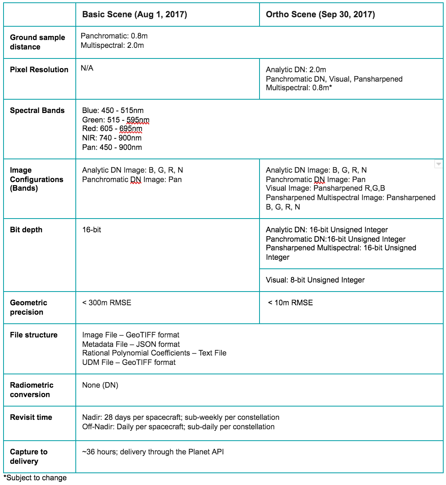
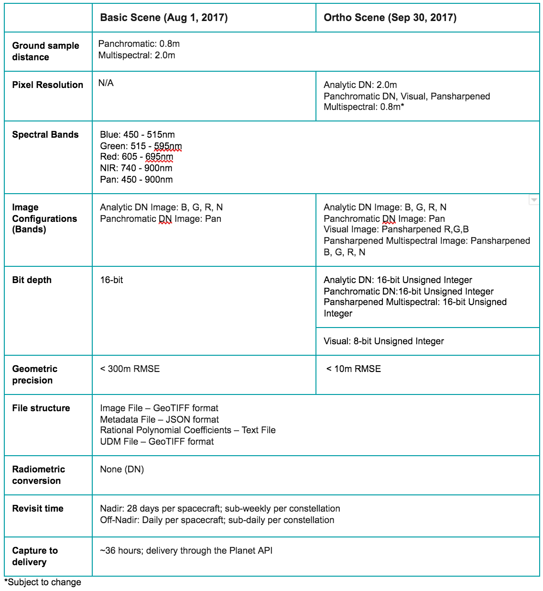
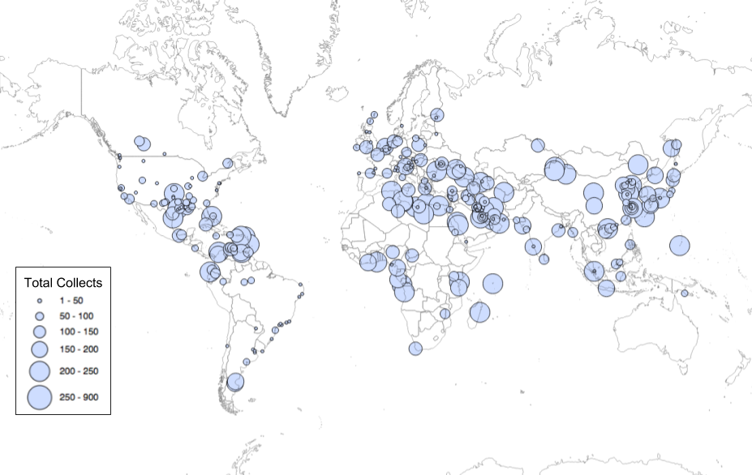
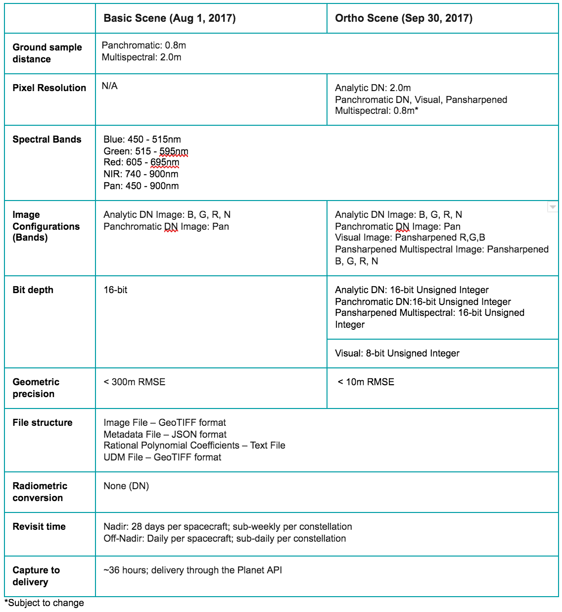

Update image, and table can be trimmed down a lot
 

US Virgin Islands May 26, 2017 SkySat-3
SkySats
“The SkySat constellation is Planet’s new fleet of sub-meter
imaging satellites. With seven satellites currently in orbit,
Planet is capable of imaging any point on earth at sub-meter
resolution daily. Each SkySat has five spectral bands, capable
of capturing high resolution imagery and video
SkySat Specifications
| Current Constellation | 7 SkySats |
| Upcoming Launch | Minotaur-C in Nov 2017 | 6 SkySats |
| Spacecraft Mass | 83 kg |
| Spacecraft Size | 60cm x 60cm x 80cm |
OR... include individual sat specs here?
| Satellite | Altitude (KM) | Equatorial Crossing (UTC) | Launch Date |
|---|---|---|---|
| SkySat-1 | 580 | 11:00 AM | Nov 21, 2013 |
| SkySat-2 | 630 | 12:45 PM | Jul 8, 2014 |
| SkySat-3 | 500 | 09:45 AM | Jun 22, 2016 |
| SkySat-4 | 500 | 10:30 AM | Sep 16, 2016 |
| SkySat-5 | 500 | 10:30 AM | Sep 16, 2016 |
| SkySat-6 | 500 | 10:30 AM | Sep 16, 2016 |
| SkySat-7 | 500 | 10:30 AM | Sep 16, 2016 |
SkySat Monitoring Program
SkySat Monitoring preview program gives users access to new
and ongoing collections of SkySat imagery in user defined
areas at regular intervals.
Include MUCH better 'monitoring' / revisit gif here
SkySat Archive
SkySat Archive preview program gives users access to bundles
of archival imagery, designed for analytics.
Sample archive below:
Find more 'external friendly' graphic
Oil Terminals 
SkySat HD Video
All SkySats are capable of collecting high-definition videos,
with the PAN band at 1.1 meter resolution, with up to
50 frames per second.
Daniel W. to stabilize
Video of the Monaco Grand Prix 2-ish years ago
Imagery Specifications
Update image, and table can be trimmed down a lot
